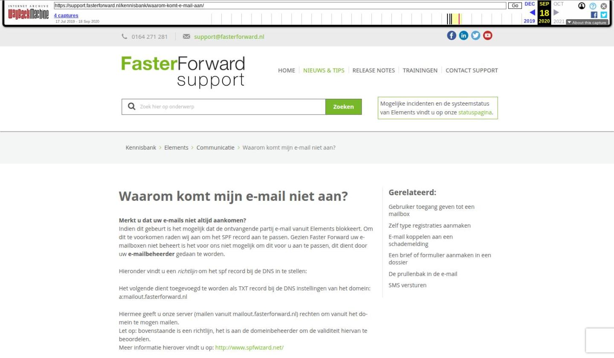

MAEX koppeling voor kredieten

Tekstinhoud
MAEX koppeling voor kredieten | Support
---
MAEX koppeling voor kredieten
De MAEX koppeling voor kredieten kan op 2 manieren de gegevens in eBlinqx updaten:
Handmatig per contract
Periodiek middels een batch
Voor het gebruik van beide functionaliteiten dien je over de MAEX webservice te beschikken met "GetProvisie" methode. Deze dient los afgenomen te worden bij Fitsolutions. In deze handleiding vind je meer informatie over het inrichten van de mapping en bepaalde instellingen bij FitSolutions.
Handmatig per contract
Periodiek middels een batch
Gegevens
Mutaties
Handmatig per contract
Nadat de koppeling in eBlinqx voor je in orde is gemaakt zal de volgende knop in de productkaart verschijnen:
Wanneer het Contractnummer is opgeslagen in het rechterdeel van de productkaart en er wordt op deze knop gedrukt worden de gegevens in het rechterdeel geüpdatet.
Periodiek middels een batch
Daarnaast kan de beheerder van jouw omgeving de batchverwerking terugzien in de MAEX kredieten module (Beheer – Offerte algemeen – Maex kredieten).
In deze module is altijd de laatste batch te zien (alleen inzien, niet achteraf koppelen o.i.d.). Ook zie je per contract in deze batch of deze gematcht kunnen worden met contracten in eBlinqx. Daarnaast zit er een
zoekfilter in om te zien of een bepaald contract is binnengekomen/gematcht in de laatste batch.
Een contract kan (na verwerking) de volgende statussen hebben in deze module:
Match op contractnummer / offertenummer
Er is een match gevonden links of rechts en de gegevens worden geüpdatet
Match op offertenummer, rechterdeel ontbreekt
Er is een match op het offertenummer in het linkerdeel, omdat het rechterdeel ontbreekt
kunnen hier uiteraard geen gegevens in geüpdatet worden.
Geen unieke match gevonden
Het contractnummer is niet of meerdere malen aanwezig in eBlinqx
Gegevens
De volgende gegevens worden geüpdatet in het rechterdeel als er een (unieke) match is bij zowel de batch- als handmatige verwerking. De gegevens worden uiteraard geüpdatet als deze aanwezig zijn in de call vanuit MAEX, het is mogelijk dat niet alle velden per contract aanwezig zijn en daardoor niet meegestuurd zijn.
Leenbedrag
Saldo
Per…, dit is de bij het saldo behorende periode
Nominale maandrente
Effectieve jaarrente
Mutaties
De velden die geüpdatet worden door de batch, handmatig ophalen of door de gebruiker zijn in het tabblad mutaties terug te vinden.
Laatste update: 15 oktober 2025
Tagged: koppeling
Was deze informatie nuttig?
Ja Nee